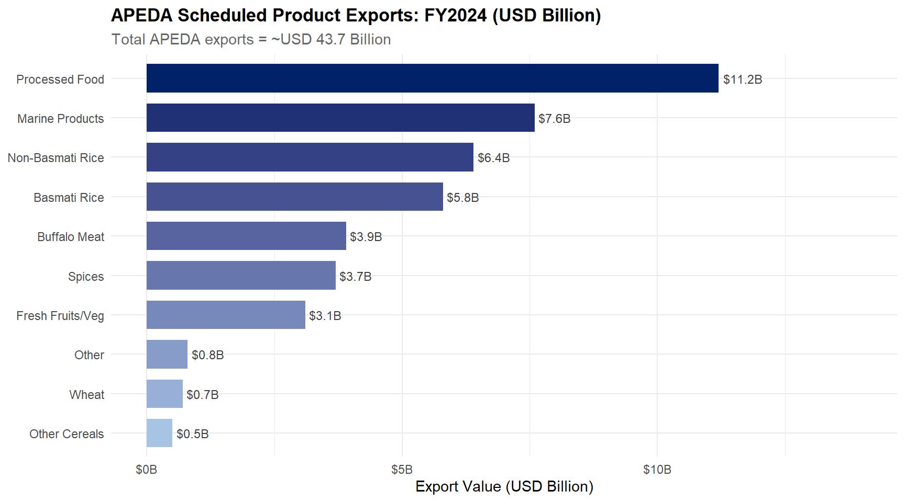

library(ggplot2)
library(dplyr)
df_apeda <- data.frame(
Product = c("Non-Basmati Rice","Basmati Rice","Wheat","Other Cereals",
"Processed Food","Marine Products","Spices",
"Buffalo Meat","Fresh Fruits/Veg","Other"),
Value_FY2024 = c(6.4, 5.8, 0.7, 0.5, 11.2, 7.6, 3.7, 3.9, 3.1, 0.8)
) |>
dplyr::arrange(Value_FY2024) |>
dplyr::mutate(Product = factor(Product, levels = Product),
Rank = dplyr::row_number())
ggplot(df_apeda, aes(x = Value_FY2024, y = Product, fill = Rank)) +
geom_col(width = 0.72, show.legend = FALSE) +
geom_text(aes(label = paste0("$", Value_FY2024, "B")), hjust = -0.12, size = 3.2, colour = "grey25") +
scale_fill_gradient(low = "#a8c4e5", high = "#012169") +
scale_x_continuous(limits = c(0, 14), labels = function(x) paste0("$", x, "B")) +
labs(title = "APEDA Scheduled Product Exports: FY2024 (USD Billion)",
subtitle = "Total APEDA exports = ~USD 43.7 Billion",
x = "Export Value (USD Billion)", y = NULL) +
theme_minimal(base_size = 11) +
theme(plot.title = element_text(face = "bold"),
plot.subtitle = element_text(colour = "grey40"))